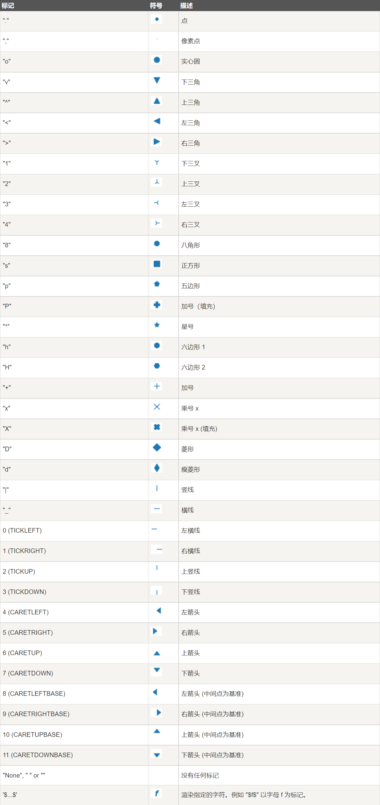
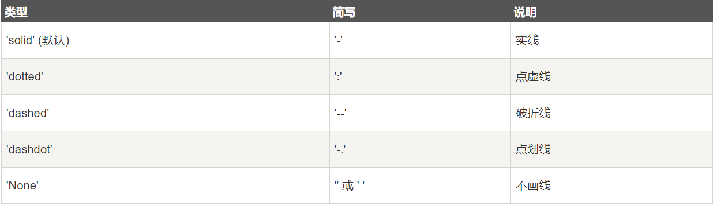
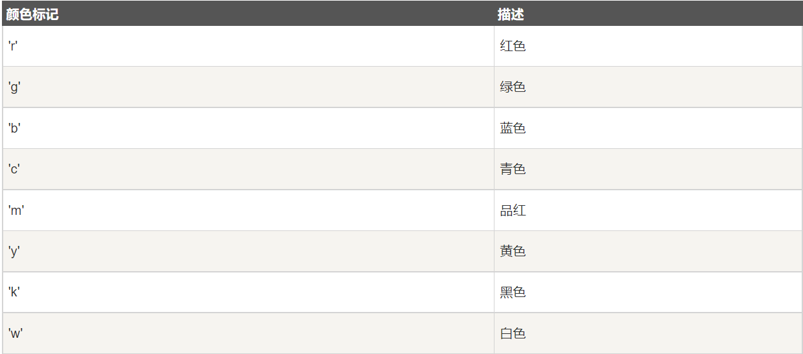

matplotlib.pyplot学习¶
绘图标记¶
import matplotlib.pyplot as plt
import numpy as np
ypoints = np.array([1,3,4,5,8,9,6,1,3,4,5,2,4])
plt.plot(ypoints, marker = 'o') # "o"代表实心圆
plt.show()
maker可用的符号如下：

fmt参数¶
fmt = '[marker][line][color]'
例如 o:r，o 表示实心圆标记，: 表示虚线，r 表示颜色为红色。
线类型¶

线的类型可以使用 linestyle 参数来定义，简写为 ls。
线的宽度¶
线的宽度可以使用 linewidth 参数来定义，简写为 lw，值可以是浮点数，如：1、2.0、5.67 等。
颜色类型¶

线的颜色¶
线的颜色可以使用 color 参数来定义，简写为 c。
标记大小与颜色¶
我们可以自定义标记的大小与颜色，使用的参数分别是：
- markersize，简写为 ms：定义标记的大小。
- markerfacecolor，简写为 mfc：定义标记内部的颜色。
- markeredgecolor，简写为 mec：定义标记边框的颜色。
import matplotlib.pyplot as plt
import numpy as np
ypoints = np.array([6, 2, 13, 10])
plt.plot(ypoints, marker = 'o', ms = 20)
plt.show()
Matplotlib 轴标签和标题¶
我们可以使用 xlabel() 和 ylabel() 方法来设置 x 轴和 y 轴的标签。
import numpy as np
import matplotlib.pyplot as plt
x = np.array([1, 2, 3, 4])
y = np.array([1, 4, 9, 16])
plt.plot(x, y)
plt.xlabel("x - label")
plt.ylabel("y - label")
plt.show()
标题¶
我们可以使用 title() 方法来设置标题
也可以自定义字体样式，通过传入fontdict参数
import matplotlib.pyplot as plt
import numpy as np
font = {"color":"blue","size":20}
ypoints = np.array([1,3,4,5,8,9,6,1,3,4,5,2,4])
plt.plot(ypoints,marker="o",color="r",linestyle="-.")
plt.title("test",fontdict=font)
plt.xlabel("x",fontdict=font)
plt.ylabel("y",fontdict=font)
plt.show()
Matplotlib 网格线¶
我们可以使用 pyplot 中的 grid() 方法来设置图表中的网格线。
grid() 方法语法格式如下：
matplotlib.pyplot.grid(b=None, which='major', axis='both', )
参数说明：
- b：可选，默认为 None，可以设置布尔值，true 为显示网格线，false 为不显示，如果设置 **kwargs 参数，则值为 true。
- which：可选，可选值有 ‘major’、’minor’ 和 ‘both’，默认为 ‘major’，表示应用更改的网格线。
- axis：可选，设置显示哪个方向的网格线，可以是取 ‘both’（默认），’x’ 或 ‘y’，分别表示两个方向，x 轴方向或 y 轴方向。
- ****kwargs**：可选，设置网格样式，可以是 color=’r’, linestyle=’-‘ 和 linewidth=2，分别表示网格线的颜色，样式和宽度。
以下实例添加一个简单的网格线，并设置网格线的样式，格式如下：
grid(color = 'color', linestyle = 'linestyle', linewidth = number)
参数说明：
color：‘b’ 蓝色，’m’ 洋红色，’g’ 绿色，’y’ 黄色，’r’ 红色，’k’ 黑色，’w’ 白色，’c’ 青绿色，’#008000’ RGB 颜色符串。
linestyle：‘‐’ 实线，’‐‐’ 破折线，’‐.’ 点划线，’:’ 虚线。
linewidth：设置线的宽度，可以设置一个数字。
Matplotlib 绘制多图¶
我们可以使用 pyplot 中的 subplot() 和 subplots() 方法来绘制多个子图。
subpot() 方法在绘图时需要指定位置，subplots() 方法可以一次生成多个，在调用时只需要调用生成对象的 ax 即可。
subplot¶
subplot(nrows, ncols, index, **kwargs)
subplot(pos, **kwargs)
subplot(**kwargs)
subplot(ax)
以上函数将整个绘图区域分成 nrows 行和 ncols 列，然后从左到右，从上到下的顺序对每个子区域进行编号 1…N ，左上的子区域的编号为 1、右下的区域编号为 N，编号可以通过参数 index 来设置。
设置 numRows ＝ 1，numCols ＝ 2，就是将图表绘制成 1x2 的图片区域, 对应的坐标为：
(1, 1), (1, 2)
设置 numRows ＝ 2，numCols ＝ 2，就是将图表绘制成 2x2 的图片区域, 对应的坐标为：
(1, 1), (1, 2)
(2, 1), (2, 2)
subplots()¶
subplots() 方法语法格式如下：
matplotlib.pyplot.subplots(nrows=1, ncols=1, *, sharex=False, sharey=False, squeeze=True, subplot_kw=None, gridspec_kw=None, **fig_kw)
参数说明：
- nrows：默认为 1，设置图表的行数。
- ncols：默认为 1，设置图表的列数。
- sharex、sharey：设置 x、y 轴是否共享属性，默认为 false，可设置为 ‘none’、’all’、’row’ 或 ‘col’。 False 或 none 每个子图的 x 轴或 y 轴都是独立的，True 或 ‘all’：所有子图共享 x 轴或 y 轴，’row’ 设置每个子图行共享一个 x 轴或 y 轴，’col’：设置每个子图列共享一个 x 轴或 y 轴。
- squeeze：布尔值，默认为 True，表示额外的维度从返回的 Axes(轴)对象中挤出，对于 N*1 或 1*N 个子图，返回一个 1 维数组，对于 N*M，N>1 和 M>1 返回一个 2 维数组。如果设置为 False，则不进行挤压操作，返回一个元素为 Axes 实例的2维数组，即使它最终是1x1。
- subplot_kw：可选，字典类型。把字典的关键字传递给 add_subplot() 来创建每个子图。
- gridspec_kw：可选，字典类型。把字典的关键字传递给 GridSpec 构造函数创建子图放在网格里(grid)。
- ****fig_kw**：把详细的关键字参数传给 figure() 函数。
常用技巧
x = np.linspace(0, 2*np.pi, 400)
y = np.sin(x**2)
fig, axs = plt.subplots(2, 2)
for i in axs.flatten(): # axs.flatten()将二维数组变为一维，方便循环。
i.plot(x, y)
Matplotlib 散点图¶
我们可以使用 pyplot 中的 scatter() 方法来绘制散点图。
scatter() 方法语法格式如下：
matplotlib.pyplot.scatter(x, y, s=None, c=None, marker=None, cmap=None, norm=None, vmin=None, vmax=None, alpha=None, linewidths=None, *, edgecolors=None, plotnonfinite=False, data=None, **kwargs)
参数说明：
x，y：长度相同的数组，也就是我们即将绘制散点图的数据点，输入数据。
s：点的大小，默认 20，也可以是个数组，数组每个参数为对应点的大小。
c：点的颜色，默认蓝色 ‘b’，也可以是个 RGB 或 RGBA 二维行数组。
marker：点的样式，默认小圆圈 ‘o’。
cmap：Colormap，默认 None，标量或者是一个 colormap 的名字，只有 c 是一个浮点数数组的时才使用。如果没有申明就是 image.cmap。
norm：Normalize，默认 None，数据亮度在 0-1 之间，只有 c 是一个浮点数的数组的时才使用。
vmin，vmax：：亮度设置，在 norm 参数存在时会忽略。
alpha：：透明度设置，0-1 之间，默认 None，即不透明。
linewidths：：标记点的长度。
edgecolors：：颜色或颜色序列，默认为 ‘face’，可选值有 ‘face’, ‘none’, None。
plotnonfinite：：布尔值，设置是否使用非限定的 c ( inf, -inf 或 nan) 绘制点。
****kwargs：**：其他参数。
设置颜色条需要使用 cmap 参数，默认值为 ‘viridis’，之后颜色值设置为 0 到 100 的数组。
如果要显示颜色条，需要使用 plt.colorbar() 方法：
Matplotlib 柱形图¶
我们可以使用 pyplot 中的 bar() 方法来绘制柱形图。
bar() 方法语法格式如下：
matplotlib.pyplot.bar(x, height, width=0.8, bottom=None, *, align='center', data=None, **kwargs)
参数说明：
x：浮点型数组，柱形图的 x 轴数据。
height：浮点型数组，柱形图的高度。
width：浮点型数组，柱形图的宽度。
bottom：浮点型数组，底座的 y 坐标，默认 0。
align：柱形图与 x 坐标的对齐方式，’center’ 以 x 位置为中心，这是默认值。 ‘edge’：将柱形图的左边缘与 x 位置对齐。要对齐右边缘的条形，可以传递负数的宽度值及 align=’edge’。
****kwargs：**：其他参数。
垂直方向的柱形图可以使用 barh() 方法来设置：
Matplotlib 饼图¶
我们可以使用 pyplot 中的 pie() 方法来绘制饼图。
pie() 方法语法格式如下：
matplotlib.pyplot.pie(x, explode=None, labels=None, colors=None, autopct=None, pctdistance=0.6, shadow=False, labeldistance=1.1, startangle=0, radius=1, counterclock=True, wedgeprops=None, textprops=None, center=0, 0, frame=False, rotatelabels=False, *, normalize=None, data=None)[source]
参数说明：
x：浮点型数组，表示每个扇形的面积。
explode：数组，表示各个扇形之间的间隔，默认值为0。
labels：列表，各个扇形的标签，默认值为 None。
colors：数组，表示各个扇形的颜色，默认值为 None。
autopct：设置饼图内各个扇形百分比显示格式，%d%% 整数百分比，%0.1f 一位小数， %0.1f%% 一位小数百分比， %0.2f%% 两位小数百分比。
labeldistance：标签标记的绘制位置，相对于半径的比例，默认值为 1.1，如 **<1**则绘制在饼图内侧。
pctdistance：：类似于 labeldistance，指定 autopct 的位置刻度，默认值为 0.6。
shadow：：布尔值 True 或 False，设置饼图的阴影，默认为 False，不设置阴影。
radius：：设置饼图的半径，默认为 1。
startangle：：起始绘制饼图的角度，默认为从 x 轴正方向逆时针画起，如设定 =90 则从 y 轴正方向画起。
counterclock：布尔值，设置指针方向，默认为 True，即逆时针，False 为顺时针。
wedgeprops ：字典类型，默认值 None。参数字典传递给 wedge 对象用来画一个饼图。例如：wedgeprops={‘linewidth’:5} 设置 wedge 线宽为5。
textprops ：字典类型，默认值为：None。传递给 text 对象的字典参数，用于设置标签（labels）和比例文字的格式。
center ：浮点类型的列表，默认值：(0,0)。用于设置图标中心位置。
frame ：布尔类型，默认值：False。如果是 True，绘制带有表的轴框架。
rotatelabels ：布尔类型，默认为 False。如果为 True，旋转每个 label 到指定的角度。